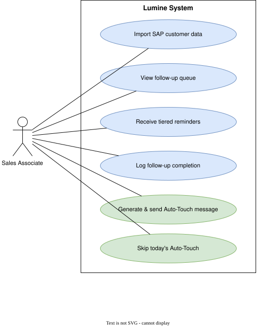
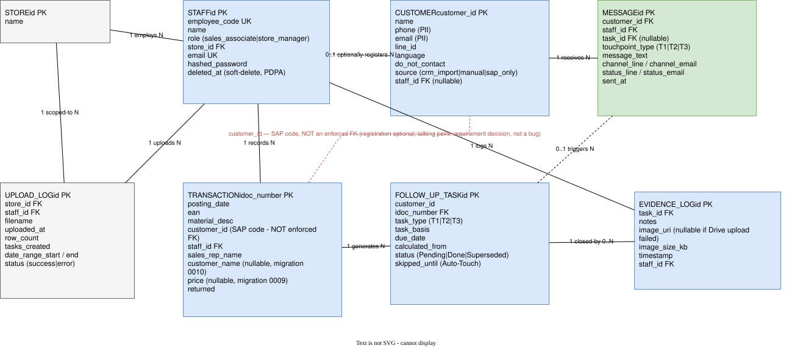
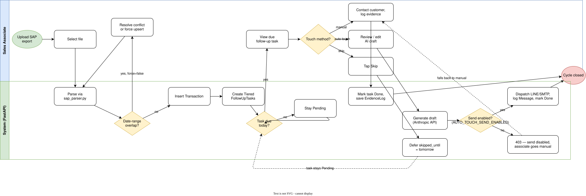
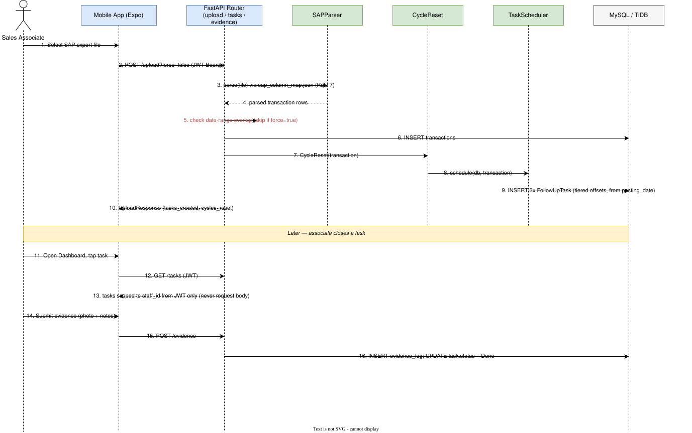
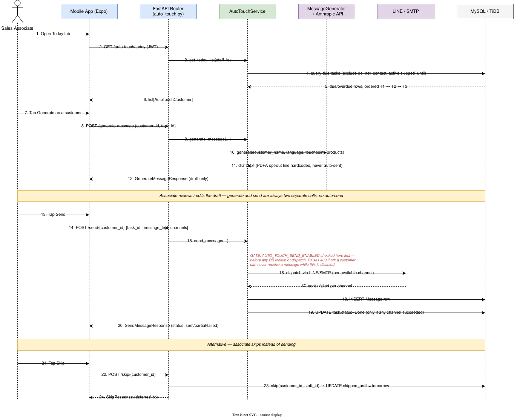
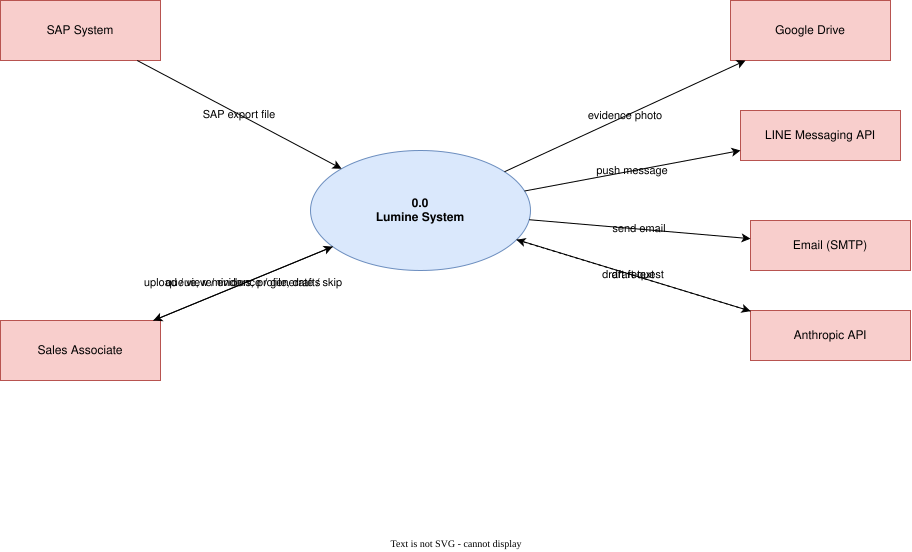
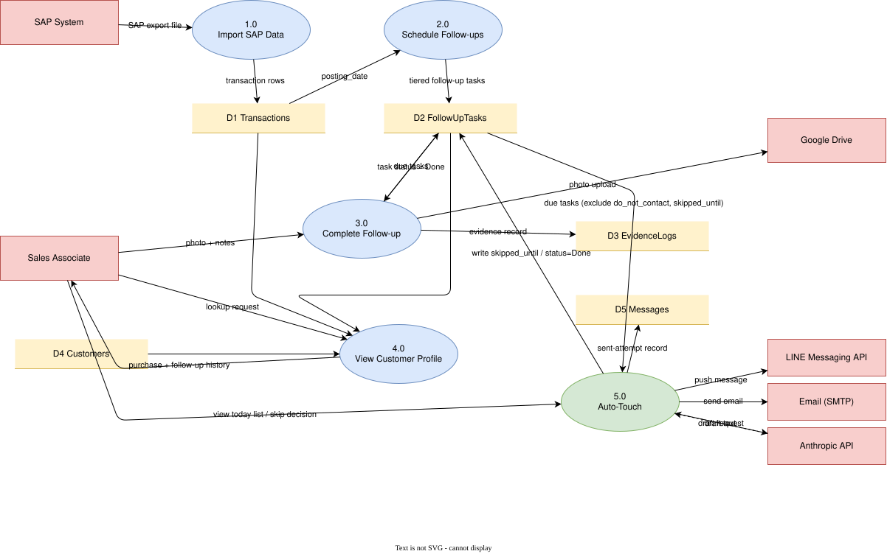
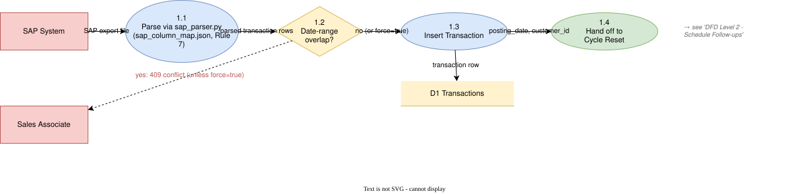
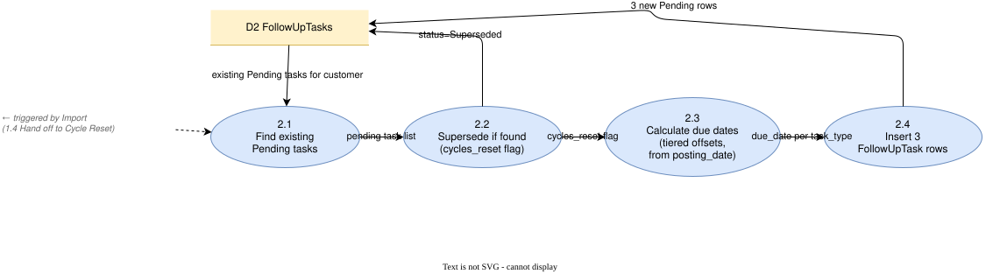
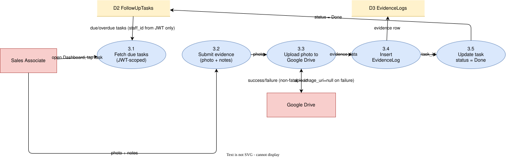

Fig. 2
System Architecture

Evidence-Based CRM for Luxury Retail Sales Teams
Lumine is an evidence-based CRM built for a luxury retail sales team. It ingests point-of-sale transaction data, automatically schedules a structured post-purchase follow-up cadence, and requires photographic and written evidence before a follow-up can be marked complete. This document describes the system as it is actually built and deployed today.
Two deployable applications sharing one API contract:
| Term | Meaning |
|---|---|
| Tiered cadence | Follow-up schedule: contact a customer at three defined intervals after a purchase — near-term, mid-term, and long-term |
| Cycle Reset | When a customer buys again, their pending follow-ups are superseded and a fresh cadence starts from the new purchase date |
| Evidence | Photo and notes an associate logs to confirm a follow-up actually happened |
| Auto-Touch | AI-assisted follow-up: drafts a personalized message for associate review before it is sent |
| PDPA | Thailand's Personal Data Protection Act, governing how customer contact details are stored and used |
| Function | Area | Capability |
|---|---|---|
| Authentication | Auth | Login, registration, token refresh, session info |
| Store lookup | Stores | Public store directory |
| Transaction import | Upload | Point-of-sale export upload, upload history |
| Follow-up tasks | Tasks | List and complete follow-ups |
| Evidence | Evidence | Submit, retrieve, and update follow-up evidence |
| Reports / KPI | Reports | Completion-rate dashboard, per-store and per-associate |
| Customers | Customers | CRM import, registration, profile, transaction and task history |
| Auto-Touch | Auto-Touch | Daily queue, AI message drafting, send, skip, status |
| Layer | Detail |
|---|---|
| Backend hosting | Cloud-hosted, free-tier deployment |
| Database | MySQL-wire-protocol compatible cloud database |
| Local development | MySQL 8.0 via Docker Compose |
| Mobile runtime | React Native 0.74 + Expo SDK ~51, TypeScript |
| Mobile distribution | Managed build service, Android APK |
| Container | Non-root Python 3.11 image running Uvicorn |
Strict layering, enforced by team convention:
Mobile (React Native) → HTTPS + JWT → Routers → Services → Repositories → Database
| Integration | Purpose |
|---|---|
| Cloud file storage | Evidence photo storage (upload failure is handled gracefully — see FR-04) |
| Claude (Anthropic) API | Auto-Touch draft message generation |
| LINE Messaging API | Auto-Touch dispatch, channel 1 |
| Email (SMTP) | Auto-Touch dispatch, channel 2 |
Full visual diagrams (Use Case, ER, Architecture, Data Flow, Sequence, BPMN) accompany this document — 13 diagram views reflecting the same current system this specification describes.
8 tables, reflecting the live schema field-by-field:
| Table | Key Fields | Notes |
|---|---|---|
stores | id, name | Minimal reference table |
staff | id, employee code, name, role, store, email, password hash, soft-delete flag | Soft-delete supports PDPA-aligned data handling |
customers | customer id, name, phone, email, LINE id, language, do-not-contact, source | Language and contact preference tracked per customer |
transactions | document number, posting date, item, customer id, staff, price, returned flag | Customer linkage is intentionally optional — registration is not required to transact |
follow_up_tasks | id, customer, transaction, tier code, due date, status | Status: Pending, Done, or Superseded by a newer cycle |
evidence_logs | id, task, notes, image reference, timestamp, staff | Image reference is nullable if cloud upload failed |
messages | id, customer, staff, task, channel, status, sent at | Auto-Touch's send-attempt log |
upload_logs | id, store, staff, filename, row count, tasks created, status | Import audit trail |
Schema evolved through 11 incremental, linear migrations — from the initial release through the addition of Auto-Touch tracking fields and follow-up query indexing.
Parses a point-of-sale export (CSV/Excel), maps columns via a configurable schema, and scopes rows to the uploading associate. A default import rejects on date-range overlap with existing data; an explicit override allows re-import to upsert rather than duplicate.
Fixed offsets from the purchase date, at three tiers (near-term, mid-term, long-term). No weekend/holiday adjustment; due dates are calculated from the purchase date only, never from "today."
When an existing customer purchases again, all of their currently-pending follow-ups are superseded first, then a fresh cadence is created from the new purchase date — old and new pending cycles never coexist.
Photo (compressed client-side, re-checked server-side) and notes up to 2,000 characters. Cloud storage upload failure is handled gracefully by design — the evidence record still saves, rather than blocking the associate from completing their work.
| Access pattern | Sales associate | Store manager |
|---|---|---|
| Follow-up tasks | Own tasks only | All tasks in own store |
| Upload history | Not available | Own store only |
| Evidence records | Own evidence only | Any evidence in own store |
| Auto-Touch | Own customers | Own customers |
Deliberately store-wide by design: any staff member can see a customer's full purchase and follow-up history across colleagues within their own store, but never across stores. Contact details (phone, email, messaging id) are excluded from this view to keep it usable for service continuity without exposing PII unnecessarily.
Completion-rate reporting (done vs. pending, superseded tasks excluded) with a store-wide breakdown for managers and a single own-row view for associates — same response shape for both.
The most substantial subsystem added since the original design: a due-today queue, AI-drafted message generation (Claude), multi-channel dispatch (LINE and/or email), and a skip/defer flow. Draft generation and sending are always two separate steps — automated sending without human review is a deliberate, permanent product decision, not a current limitation. Dispatch is additionally gated behind an independent configuration flag, checked before any other logic runs.
Bulk customer import from a fixed-format spreadsheet, plus point-of-sale quick registration with register-not-upsert semantics.
Mobile-only, fully offline: renders a QR code encoding the customer id for scanning at a point-of-sale terminal.
JWT-based authentication (60-minute access token, 7-day refresh token), bcrypt password hashing. The authenticated staff identity is always derived from the token server-side — never accepted from the request body. A small set of endpoints (login, registration, token refresh, store directory, health check) are intentionally public.
Customer phone, email, and messaging id are treated as PII — never logged, never included in tokens or URL parameters. Do-not-contact preference is enforced at the data layer, not left to application logic. Staff soft-delete supports erasure-adjacent handling without breaking historical transaction integrity.
Key lookup columns are indexed (transaction document number, posting date, customer id, and follow-up task lookups), keeping list and dashboard queries responsive as data volume grows.
A single light theme, defined through a shared design-token file rather than per-screen styling — with an ongoing consistency pass to migrate the remaining screens fully onto shared tokens.
Read-only local cache for the task list, so the dashboard degrades gracefully on network loss. Actions that change data (evidence upload, imports, marking tasks done, Auto-Touch) require connectivity by design — network and server errors are deliberately distinguished in the UI so a temporary offline state never looks like a broken app.
Automated message dispatch sits behind an independent, default-off configuration flag, checked before any other Auto-Touch logic runs. Feature-complete, but currently disabled in production — the mobile app supports manual review, copy, and share of AI-generated drafts while dispatch remains off.
A single OpenAPI specification defines 24 paths and 36 component schemas, and is treated as the authoritative source for field names on both the backend and mobile client — a field is never renamed or added on one side without updating the shared contract.
A single native-stack navigator across 14 screens, each implementing its own header. Access to the app is gated by whether a valid session token is present at launch, backed up by server-side enforcement on every request.
| Screen | Purpose |
|---|---|
| Login / Register | Authentication and self-registration |
| Dashboard | Today's task list — home screen |
| Task Detail | Single task detail and mark-done |
| Evidence / Evidence Detail | Submit and review follow-up evidence |
| Completed Tasks | Done-task history |
| Barcode | Customer QR code display |
| Upload / Upload History | Transaction import and audit log |
| Follow-Up Dashboard | KPI/report view with export |
| Auto-Touch / Auto-Touch Detail | Daily AI follow-up queue and message review |
| Customer Profile | Customer 360° view of purchases and follow-ups |
No global app-state store — screens fetch directly and manage their own local state, governed by three consistent conventions: data refreshes whenever a screen regains focus; mutations update the UI immediately and roll back with a clear message on failure; and there is no real-time polling or WebSocket layer — every data change is user-triggered by design, keeping the app's behavior predictable.
Session token stored on-device, attached automatically to every request. On an expired session, the app transparently refreshes the token and retries once; concurrent requests share a single refresh attempt rather than racing. A failed refresh cleanly signs the user out.
331 automated backend tests across 33 test files, covering the service and repository layers. Test execution is currently a manual step in the development workflow rather than an enforced CI gate.
Backend and database are deployed on free-tier cloud infrastructure, currently configured manually rather than through infrastructure-as-code. An early gap around automatic schema migration on deploy was identified and resolved by adding a manual migration-verification step to the deployment process — a useful lesson in treating "deploy" and "migrate" as two steps that must both be confirmed, not one. Mobile releases are built and distributed as an Android package through a managed build service.
Diagram set: 13 companion diagram views — Use Case, ER Diagram, Sequence (core flow and Auto-Touch), Architecture, Data Flow (Levels 0–2), and BPMN — reflecting the same current system this specification describes. Reproduced in full below, one per page, in the same order and from the same source files shown on the portfolio site's diagram gallery.









